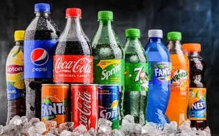
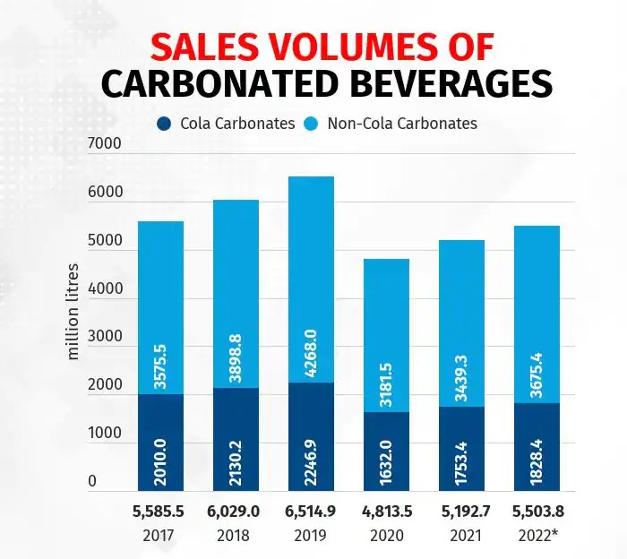

Soft Drinks Awareness
Home
About
Effects
Alternatives
Contact
About Soft Drinks

Soft drinks, also known as carbonated beverages or fizzy drinks, are non-alcoholic beverages that are flavored and carbonated. They are immensely popular worldwide and come in a wide range of flavors, providing a refreshing and often sweet taste.
Carbonation Process
: Soft drinks are carbonated by dissolving carbon dioxide gas under pressure into the beverage. This creates bubbles and gives the drink its characteristic fizz.
Ingredients
: Soft drinks typically contain carbonated water, sweeteners (such as sugar or artificial sweeteners), flavorings, and often caffeine. They may also include preservatives, colorings, and other additives.
Variety of Flavors
: Soft drinks come in a wide array of flavors, including cola, lemon-lime, orange, root beer, ginger ale, and fruit flavors. This variety allows consumers to choose their preferred taste.
Sweeteners
: Soft drinks are usually sweetened with various types of sugars or artificial sweeteners to enhance the flavor. Common sweeteners include sucrose, high-fructose corn syrup, aspartame, and stevia.
Non-Alcoholic
: Soft drinks are non-alcoholic beverages, which means they do not contain alcohol. They are often consumed as a substitute for alcoholic beverages or as a refreshing drink on their own.
Carbonated Water
: Soft drinks are primarily made with carbonated water, which is water that has been infused with carbon dioxide. This gives the drinks their characteristic bubbles and effervescence.
Diet and Zero-Calorie Drinks
: In response to concerns about sugar consumption and calorie intake, many soft drink companies offer diet or zero-calorie versions of their beverages. These drinks use artificial sweeteners or natural low-calorie sweeteners to provide the sweet taste without the added calories
Energy Drinks
: Energy drinks are a subset of soft drinks that contain stimulants like caffeine, guarana, or taurine. They are marketed for their energizing effects and are often consumed for a boost of energy or to combat fatigue.
Health Concerns
: Regular consumption of soft drinks has been linked to obesity, tooth decay, type 2 diabetes, and other health issues. The high sugar content and calorie density of many soft drinks make them a target of health advocacy groups.
Cola Wars
: The competition between major cola brands, such as Coca-Cola and PepsiCo, is often referred to as the "Cola Wars." These companies have engaged in intense marketing campaigns and product innovations to gain market share.
Packaging and Sizes
: Soft drinks are commonly available in cans, bottles (glass or plastic), and fountain dispensers. They come in various sizes, including standard 12-ounce cans, 20-ounce bottles, 2-liter bottles, and larger bulk packages.
Cultural Significance
: Soft drinks have become an integral part of modern popular culture and are often associated with social gatherings, celebrations, and leisure activities. They are consumed worldwide and have a significant presence in the global beverage market.
It's important to note that while soft drinks can be enjoyed in moderation, it is recommended to be mindful of their sugar and calorie content as part of a balanced diet
